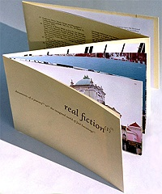
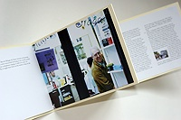
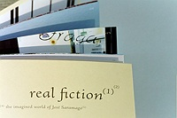
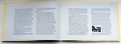

Emily Artinian
from real fiction
When I first became aware of artists’ books I was a PhD student studying literature, spending too many long hours in the cold and harsh glare of my computer monitor. Time spent in the library making marginalia and notes by hand and paging through old foxed and cracking volumes provided a welcome respite from the attenuated actions of typing, ‘cutting’, and ‘pasting’ pixelated thoughts onscreen.
Over time, the physicality of direct interaction with books and notebooks became compelling enough to send me looking for an alternative to academic writing, for a medium where my ideas could be both worked out and expressed in a material form. A form that could, in turn, be both mentally and physically experienced by my own readers.
After a good deal of searching in various corners of the visual arts, architecture, and theatre, I found the artist’s book, and with it the place to get my ideas about literature stuck into the material world. I have been making artist’s books ever since, and until recently, I gave only fleeting consideration to putting any of the work back into pixelated form.
Real fiction
My artist’s book real fiction is about the writing of Portuguese author José Saramago, whose stories often foreground the shifty line between fiction and reality. I was intrigued by this quality in his novels, and as a book artist rather than as an academic, instead of writing an expository essay about it, I went to Lisbon to physically experience the texts, walking around the ‘real’ city and photographing places that seemed to come out of Saramago’s imagination. These photographs and a journal of this experience became the material for a ‘thesis’ in book art form.
In real fiction, excerpts from Saramago’s prose are bound together with my photographs, my journalistic commentary, and also references to critical essays that informed that commentary. All of this content is linked back and forth with a multi-directional footnote system, and the reader’s physical engagement with the object – movement between sections, viewing the photographs, and feeling the texture of the page – complements and enhances her understanding of the main ideas expressed in the book (that fiction is something we experience and construct both in the mind and in the body, and that both subjective and objective understanding of fictional meaning is heavily reliant on body memory and sense of space).
It was also fundamental to my own understanding of Saramago that I experienced his texts physically, and that I designed and bound real fiction by hand. I wrote the text and developed the layout and structure simultaneously: the bodily activity involved in the act of making informed and shaped the ideas in the text.
This direct physical experience is central to my work and is something I feel would be extremely difficult, if not impossible, to create in a virtual medium. One can imagine a version of real fiction as a website with links applied to the extensive footnote system, but this would make for a poor simulation – a two dimensional space in which the reader would be easily lost, unaware of his location, unable to construct a gestalt of the work, and also unable to experience it simultaneously in mind and body. The virtual world at present remains a pre-Columbian one – uncharted and flat, much of its territory existing largely in the imagination alone.
A virtual shadow
That said, one of my recent projects does have a kind of shadow life online.
This work grew out of my meetings with an avant garde writers’ group in Armenia, and it focuses on issues facing people working in experimental poetry and prose in that country today. In this post-Soviet republic, funding for and interest in new writing are extremely limited, and, further, links to western publishing structures are almost nonexistent.
A major aim of the project is thus the distribution of new Armenian writing to a wider audience, particularly a western one. Naturally, a website suggested itself at first. But I felt strongly that the content needed to be given a physical presence, rather than simply scattered to the electronic winds of the web. The point is to bring writer and reader together across geographic, linguistic, and cultural barriers, and for this I wanted a connection with my audience that was intimate and tactile. One that would hold the reader, and one that the reader could hold.
The book – now decidedly a physical object, titled From Ararat to Angeltown – is a bilingual Armenian/English edition that contains new writing by six authors, photographs of my discussion sessions with them, and excerpts from those discussions. It is large (82cm x 59cm when opened out) so that the writers in the photographs appear at almost life size, and the reader experiences a strong physical sense of their presence, something I feel could not be achieved using available electronic media. There is however an important aspect of this bookwork that is virtual – one that is closely connected to a stubborn problem in the world of artist’s books: limited accessibility.
From Ararat to Angeltown is printed in an edition of 250 copies. It is being shown in a number of venues where the audience is invited and encouraged to handle it as much as they like. But ultimately most of the relatively small edition is likely to end up in library and private collections, unavailable to a wide public. This is where the ‘virtual shadow’ of the book comes in. The stories and poems are available on my own website and on the writers’ websites. Also, as a result of email correspondence between the writers, the translator, and myself, one of the pieces has been selected for a print literary journal (the author’s first publication outside Armenia). It is hoped that similar print publications of the other writers’ work will follow. I see the online events connected to the book – both the documentation and the expansion of it – not as separate entities, but very much as an extension of the physical book itself, an echo of it in the virtual world.
Book arts websites such as www.philobiblon.com, give a good idea of the extent of documentary activity around bookarts. Countless individual artists, presses, and book stores are putting their work online, creating a vast informally interlinked catalogue of artist’s books. Printed Matter in New York and Bookworks and Circle Press in London are just some of the organisations that have created extensive visual catalogues of their work, in some cases including ten or more images of page spreads for each book, enabling the viewer to ‘leaf through’ the text (in a manner similar to Amazon’s ‘Look-Inside’ feature). Around the globe, major libraries with book arts collections offer their catalogues online and slowly they are adding visual data to their predominantly verbal entries.
Much of this activity has simple documentation as its purpose, but beyond the fact that it provides an effective solution to the problem of accessibility, it is also interesting in terms of the strategies artists and institutions are using to record the work: these range from the use of selected still images to the above mentioned sequences of click-to-turn page spreads, to videos of books being leafed through and the sophisticated – and very expensive – software the British Library uses in its ‘Turning the Page’ project, a touch screen interface that allows the user to mimic the act of turning the page by dragging the hand across the screen. One particularly interesting project can be found at www.diffusion.org.uk – the site offers dozens of artists’ books that the viewer can download, print out, and assemble himself. Part of Diffusion’s mission is to ‘[break] the dominance of mouse and screen as the primary forms of human computer interaction. The format's aim is to take the reader away from the screen and computer and engage them in the process of production.’ All of the above can be seen as attempts to allow the user to escape from the flatland of the screen, and correspondingly to move from a purely intellectual encounter to a more holistic, and more innately human, mind/body experience.
In her essay The Virtual Codex from Page Space to E-space, Johanna Drucker considers the various (mostly failed) commercial attempts at the creation of an ‘e-book’ and suggests that we examine the cultural and technological functionality of the artist’s book as a means of better understanding the potentialities of electronic space and the question of why the e-book hasn’t lived up to its hype. I would argue that it may be similarly fruitful to consider these issues in light of the ways in which book artists and institutions are documenting their work online.
Drucker argues against the mimicry of such things as simulated page drape and click-to-turn pages, but these emulations are physically engaging on some level, more so than simple mouse clicks that send one on a disorienting unmapped trail through countless cascading windows. These simulacra of engagement with the physical book are certainly far from satisfying, but there is something in them that is superior to the frenetic jumping around involved in hyperlinked online texts: further investigation of documentary use of them might help to uncover better means by which we might develop the virtual reading experience.
The invitational letter for this How2 piece asks, “As text comfortably settles into the virtual format, are there still situations where the constraints/possibilities of the material codex…are intrinsic to the writing process?’ To my mind there’s not much yet that is ‘comfortable’ about text in the virtual world. The book – and by extension the artist’s book – remains an unparalleled locus for the multi-sensory communication of ideas.
This is an abbreviated version of the full article, available here.
real fiction(1)(2): documents of a journey(3) to(4) the imagined world of José Saramago(5)
Offset and digitally printed in an edition of 100 copies, 2004. 22cm x 16cm (closed).
 |
|
 |
|
 |
|
 |
To read this article in full please go to
http://www.emilyartinian.com
Emily Artinian studied Russian Literature at Columbia and Yale. After a two year apprenticeship at a letterpress studio in New York, she completed an MA (Hons) in Book Art at Camberwell College of Art and Design. Her most recent work is The High Window, a film and accompanying artist's book about the experience of visualising fiction. She is a founding member of the artists' group FACTION, and is a senior lecturer at Chelsea College of Art. http://www.emilyartinian.com